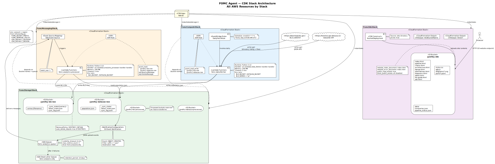

Challenge
The project started as notebook exploration and needed to become a production-ready pipeline without losing traceability. The original analysis had to move from one-off notebook execution into repeatable modules, testable logic, and automated orchestration.
It also had to preserve reproducibility across environments: quick iteration in LocalStack and reliable execution in AWS using the same processing behavior.
Solution
We converted exploratory logic into layered pipeline steps: raw ingestion, processing transforms, and curated analytics artifacts. The notebook flow informed report definitions, then those definitions were implemented in package modules and orchestrated with EventBridge, Lambda, and SQS.
Supporting pages: Architecture, Pipeline Evidence, Timeline, Charts, Diagrams, Executive Summary, Design Notes, Alternatives, BLS Guide, ADRs, and About.

- Notebook foundation: exploratory model and report logic shaped KPI definitions and data contracts.
- Module hardening: report generation moved into package code with deterministic inputs and outputs.
- Automation: queue-driven processing and scheduled ingestion enabled daily production refreshes.
Outcome
- Analysis logic became repeatable and environment-agnostic across LocalStack and AWS.
- Three reports are generated as static JSON artifacts that feed dashboard pages directly.
- The project now demonstrates a complete path from notebook experiment to operational data product.
This case study is the canonical notebook-to-production narrative for the Monetary Policy Agent project.